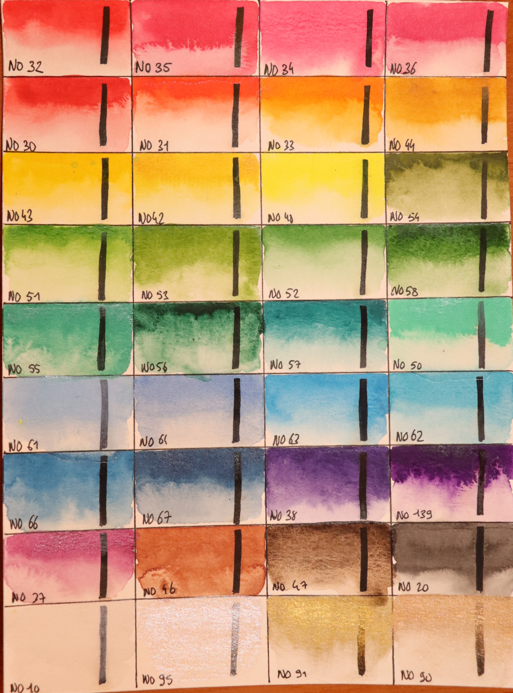
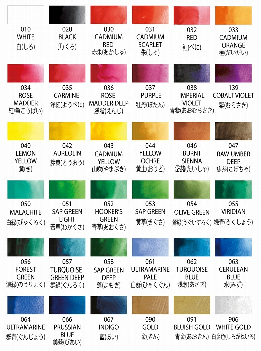
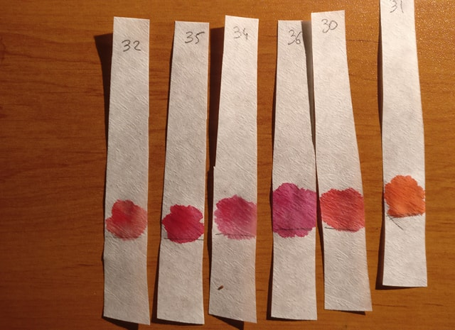
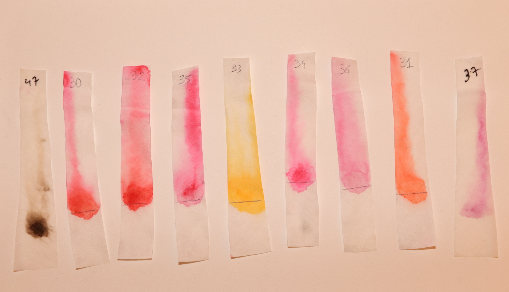

Review : Gansai Tambi Watercolor
Recently, the watercolor Gansai Tambi Kuretake appeared in our art supply stores. So let's try it!

Kuretake Gansai Tambi 10-color set was my first watercolor palette, back then i had absolutely no knowledge on watercolor and I decided to buy this palette probably because of its packaging. It was not even for the price, which at the time was higher than today (at least in Paris). I used it a lot and even decided to buy the 36-color set. Little tips, you can find these palette for cheap on chinese website ( shhhhhh ....).
First thing first, I did a color chart of my 36-color set.


From the first brushstroke, it appears that the behavior of this watercolor is very different from western brands. We can assume that this behavior is due to the binder that is based on a mixture of glue and glycerine synthetize from animal bones and skins.
First observations :
- Good water activation
- Some colors seem better than other. At first glance, red and green are intense and bright
- Some colors seem not very pigmented, in particular : 61 (ultramarine pale) ,64 (ultramarine), 46 (burnt sienna) and 47(raw umber deep)
- Paint is opaque and glossy / bright aspect when dry
- No granulation
- Reactivate easily
- Behaves differently in comparison to traditional watercolor
- AP (approved product) Seal (non toxic)
This watercolor is a mystery, there no information on pigment used or binder on the official website. However, Kuretake announces that the painting was done with a traditional receipt. Well, we can try to believe it.
On internet, we can read that this watercolor is not suited for mixing and it is adviced to use it directly from the pan. This behavior could be due to the number of pigments constituting the color. Indeed, mixing 2 colors each constituted of several pigments tends to lead to a muddy color.
Let's make some experimentation !
Chromatography is a method of chemical analysis allowing to separate the component of a mixture by selective adsorption of the constituents.
Here, i made my own solvent with : water, salt and vinegar.
Preparation :

Here the results :

Conclusion :
Chromatography method shows quickly if a paint is cheap or not, and here, the results are far better from what I expected. The paint spreads evenly across the paper strips. We don't see a clear color separation, which is very positive. I think the colors I tried are mostly mono pigmented (I have still have doubt on 30).
Of these very good results, I recommend this watercolor for beginners and sumi-e fanatics. I find that the colors blue and earth are a bit weak for general use, but finally, it remains my opinion.(